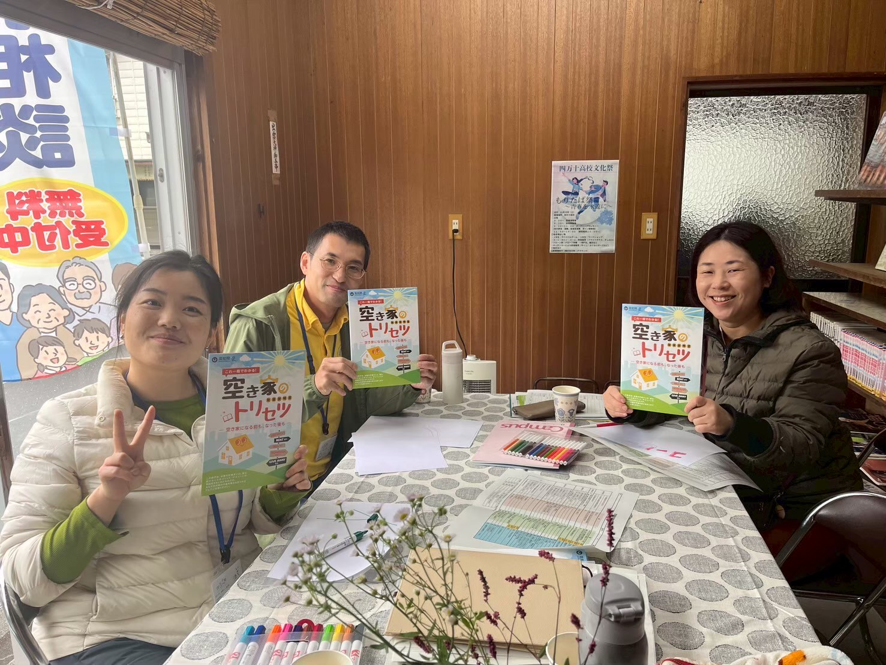
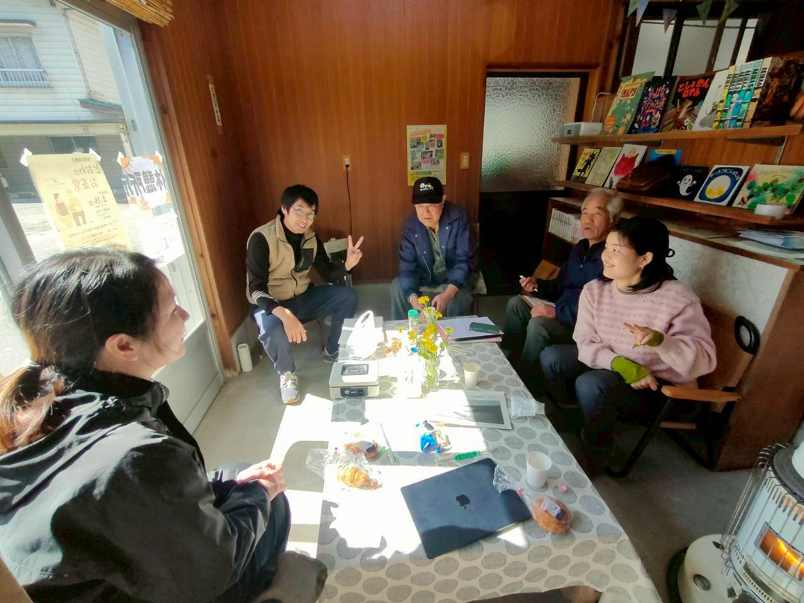
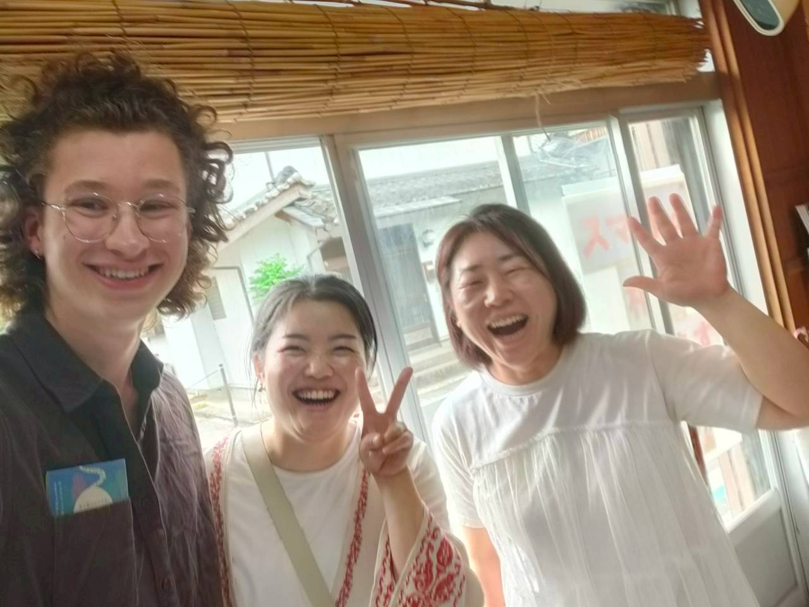
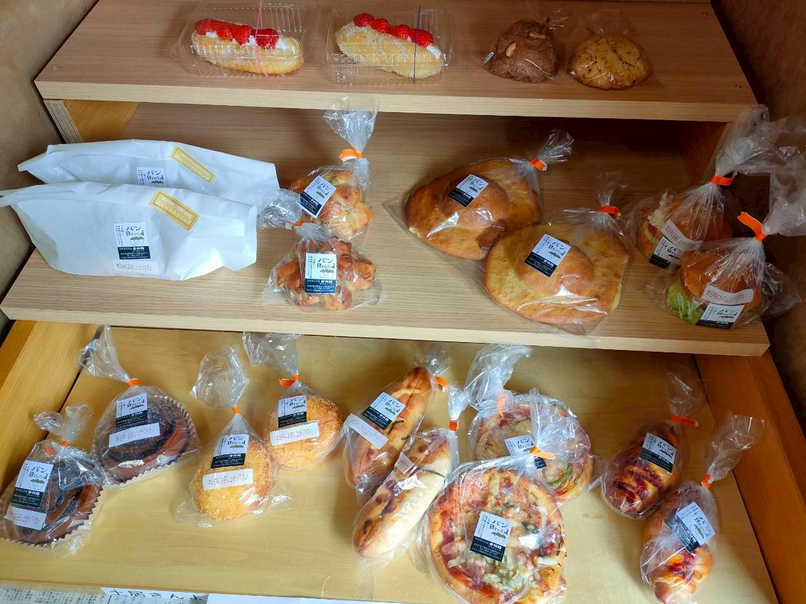
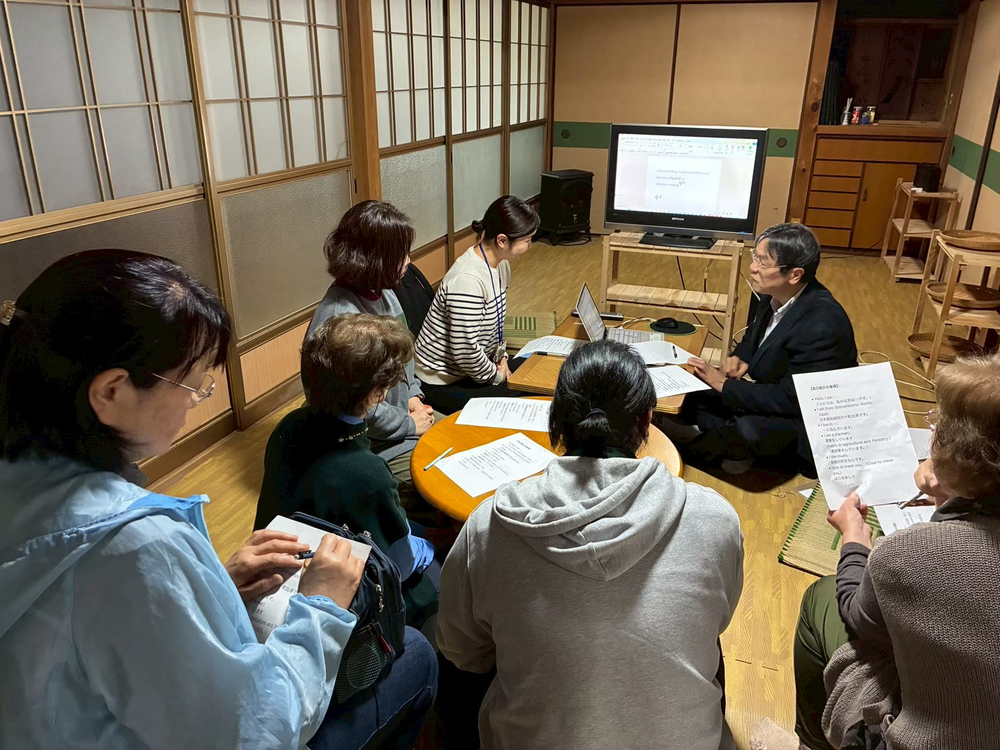
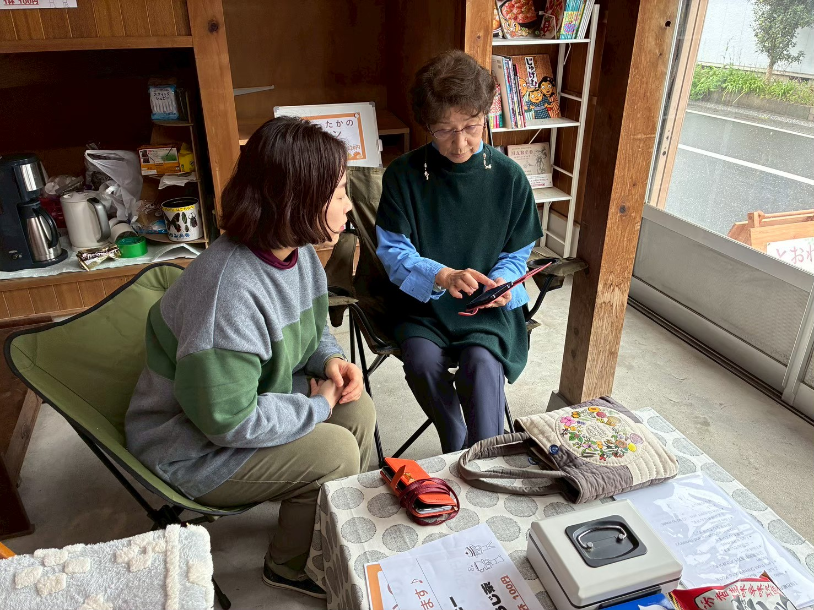

情報交流拠点
かつて旅人と住民が語り合った茶堂文化を現代に蘇らせ、「あったらいいな」を実現する場所。
最新のお知らせや毎月の開催日はInstagramをチェックしてください！
Instagramを見る四万十町十和の地で、昔から受け継がれてきた「茶堂文化」をご存知ですか？
旅人が一休みし、村人と語り合った小さな東屋「茶堂」。その温かな文化を、現代の形で蘇らせたのがとおわのお茶堂です。住民も、旅人も、誰でも気軽に立ち寄れる。お茶を飲みながらおしゃべりして、ちょっと相談して、また元気になって帰っていける——そんな場所を目指しています。
「空き家相談」「スマホ相談」「ミニ英会話教室（不定期）」などを行い、新たな交流・情報拠点としても活動しています。






空き家の活用・管理についてお気軽にご相談いただけます。
ゆっくり読書しながら、のんびり過ごせます。
ちょっと疲れたときに立ち寄って、ほっと一息つける場所です。
スマホの使い方でお困りのことがあれば、一緒に解決しましょう。
十和住民に大人気！あったかふれあいセンターのパンも販売しています。
地域の情報をシェアする掲示板コーナー。地元の声を届けます。
今月の詳しい日程や、特別ゲストのお知らせ、当日の様子などはInstagramで発信しています。ぜひフォローして最新情報をチェックしてくださいね。
公式Instagramはこちら